item_number pieces price amazon_price year
item_number 1.00000000 0.01007946 0.03442172 0.02750549 0.08146679
pieces 0.01007946 1.00000000 0.89322037 0.80588579 -0.01509377
price 0.03442172 0.89322037 1.00000000 0.89020469 -0.03491953
amazon_price 0.02750549 0.80588579 0.89020469 1.00000000 -0.22494992
year 0.08146679 -0.01509377 -0.03491953 -0.22494992 1.00000000
minifigures 0.30334281 0.37652307 0.40947381 0.41099693 -0.05583152
unique_pieces 0.16480493 0.74329656 0.74940512 0.71344252 -0.04002773
minifigures unique_pieces
item_number 0.30334281 0.16480493
pieces 0.37652307 0.74329656
price 0.40947381 0.74940512
amazon_price 0.41099693 0.71344252
year -0.05583152 -0.04002773
minifigures 1.00000000 0.64005608
unique_pieces 0.64005608 1.00000000Introduction
To many, Lego sets are merely a plaything for children. However, as with many “toy” items there is an avid community of adult Lego enjoyers. Whether this is purely to build, or to collect a wide variety of sets, there are plenty of people around the world interested in purchasing Lego sets. And with buyers, there are sellers. Many recognize this demand for Legos, and are in the market for buying and reselling. One platform that is often used for individuals to sell Lego sets to others is Amazon. We have access to a large dataset of various Lego sets, containing a variety of information, including listed Amazon prices for these sets. In this report, we will be attempting to build a model that predicts a Lego sets Amazon price based on specific factors about the Lego set. Or at least to understand how each factor of a lego set may contribute to its value. This could be helpful for any and all who are looking to resell Lego sets, whether they are seasoned or first time sellers. In building our model, we will be ignoring the original listed price for each set, imagining that we as resellers will not have this information when attempting to sell a Lego set. We can then compare our final model to a model using only the original listed price (assuming this should be the strongest indication of Amazon price) to see how well are developed model works.
Data
We are working here with the Legos dataset, attempting to predict the Amazon price. This dataset includes a number of predictors, including the number of pieces in the set, the number of unique pieces in the set, the number of minifigures in the set, the theme, the size, and a few others. We’re going to perform some exploratory data analysis to determine which variables may be best to try and model Amazon price. We’ll look for 1-3 predictors here to build a handful of models to compare between.
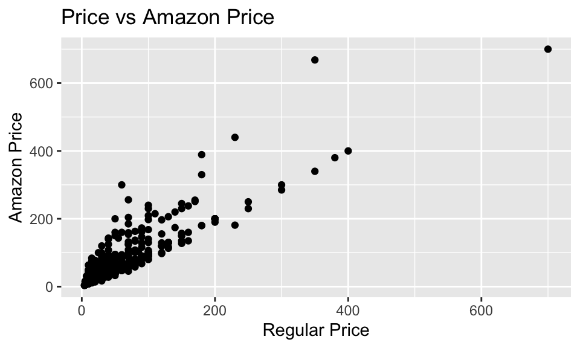
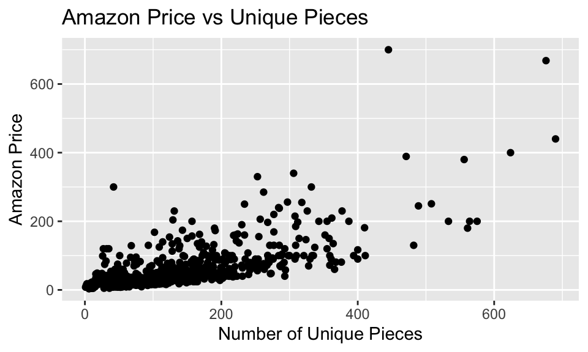
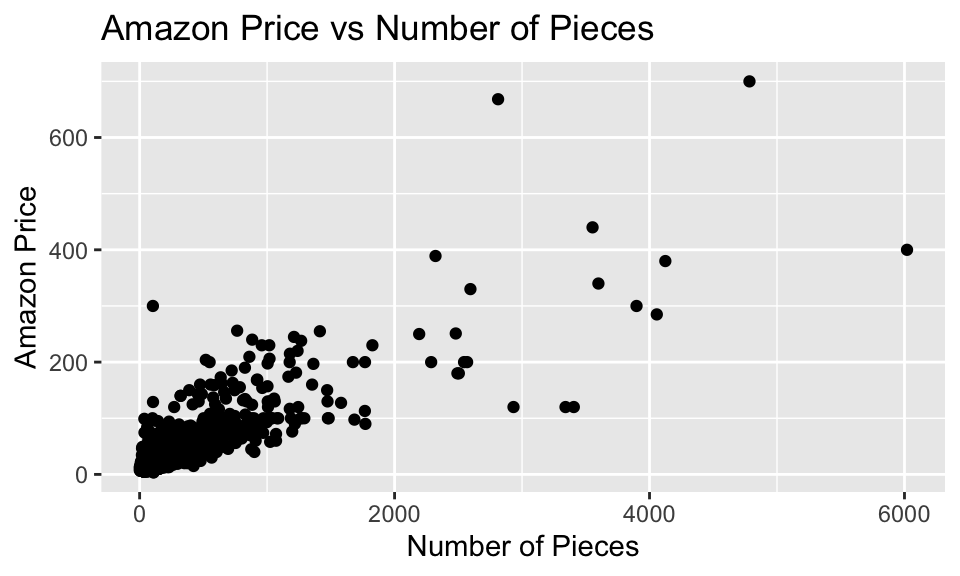
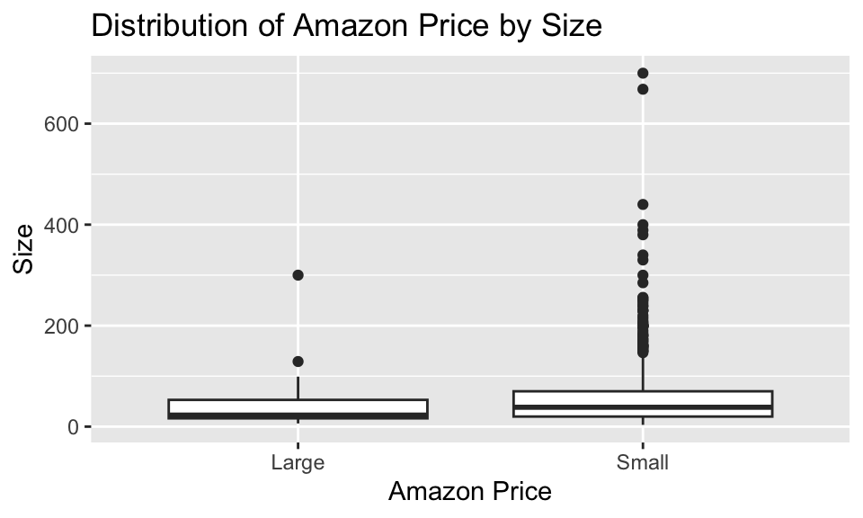
#checking out theme, there seems to be a lot of variation here. However, there
#is also a whole lot of themes. Lets maybe do something fun and ask
#chatgpt to group these themes in to 5-6 broad categories, and see
#what these can do as a predictor
Legos_grouped_price_summary <- Legos |>
group_by(theme) |>
summarize(mean_price = mean(amazon_price, na.rm=TRUE),
median_price = median(amazon_price, na.rm=TRUE),
sd_price = sd(amazon_price, na.rm = TRUE),
number_of_sets = n())
Legos_grouped_price_summary# A tibble: 35 × 5
theme mean_price median_price sd_price number_of_sets
<chr> <dbl> <dbl> <dbl> <int>
1 Architecture 71.9 60.0 23.3 11
2 Batman™ 40.6 37.0 21.5 14
3 BrickHeadz 46.4 41.9 26.8 14
4 City 52.4 32.0 51.7 88
5 Classic 26.8 20.0 25.5 11
6 Creator 3-in-1 40.6 35 32.8 34
7 Creator Expert 178. 165. 92.7 12
8 DC 70.6 51.0 41.0 8
9 DOTS 9.45 4.99 6.79 14
10 DUPLO® 41.9 22.9 52.0 38
# ℹ 25 more rowslibrary(dplyr)
Legos <- Legos %>%
mutate(theme_group = case_when(
theme %in% c("Architecture", "Classic", "Creator 3-in-1", "Creator Expert",
"Lego® Art", "Ideas") ~ "Classic & Creative Building",
theme %in% c("City", "DUPLO®", "Friends", "Juniors", "Speed Champions",
"Technic™", "Powered UP") ~ "City & Real-Life Play",
theme %in% c("Harry Potter™", "NINJAGO®", "Trolls World Tour", "Hidden Side",
"Unikitty!™", "Lego® Frozen 2") ~ "Fantasy & Adventure",
theme %in% c("Batman™", "DC", "Marvel", "Spider-Man", "Powerpuff Girls™") ~
"Action & Superheroes",
theme %in% c("Disney™", "Jurassic World™", "Minecraft™", "Minions", "Overwatch®",
"Stranger Things", "THE Lego® MOVIE 2™", "Lego® Super Mario™",
"Star Wars™") ~ "Movies, Games & Pop Culture",
theme %in% c("BrickHeadz", "DOTS") ~ "Specialty & Collectible Themes",
TRUE ~ "Other" # catch-all for unexpected or new themes
))# A tibble: 7 × 5
theme_group mean_price median_price sd_price number_of_sets
<chr> <dbl> <dbl> <dbl> <int>
1 Action & Superheroes 50.6 40.0 39.1 67
2 City & Real-Life Play 54.5 34.4 58.1 255
3 Classic & Creative Building 75.1 54.6 77.1 78
4 Fantasy & Adventure 52.0 30.0 64.8 109
5 Movies, Games & Pop Culture 67.4 44.0 85.3 173
6 Other 48.5 30.4 45.0 40
7 Specialty & Collectible Themes 27.9 19.5 26.9 28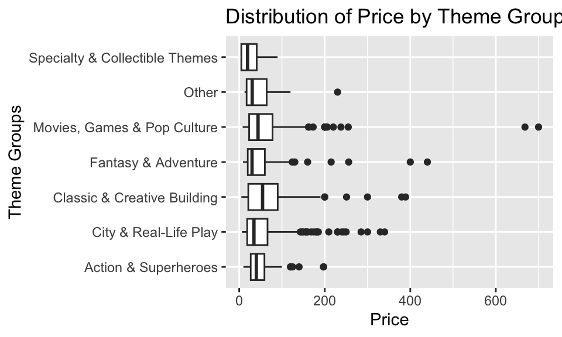
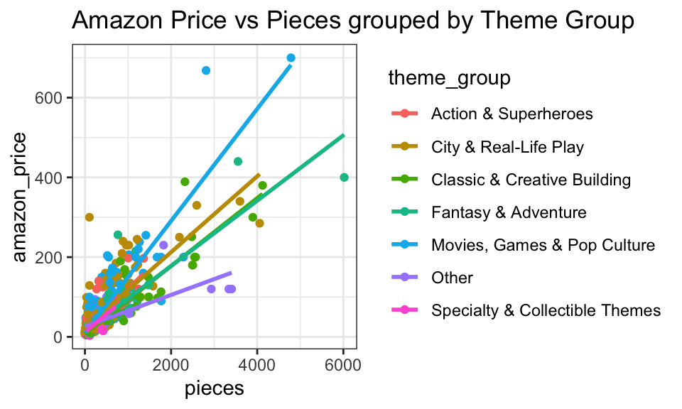
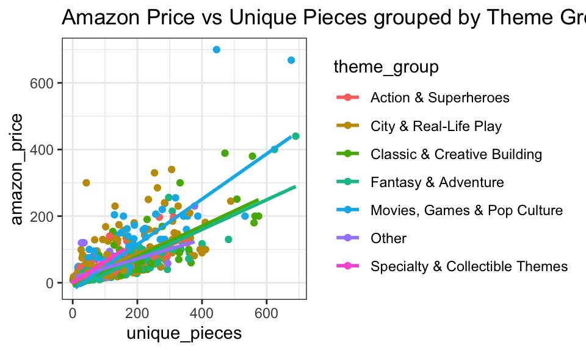
We start off with a correlation matrix, to see relationships with the numeric variables. We see that, as expected, price and Amazon price are the most highly correlated. However, we want to attempt to predict Amazon price without using the listed price. Either way, if we did use listed price it would mean we could not get much out of using number of pieces (for one example) due to multicollinearity issues. Looking at our correlation plot, it suggests that the number of pieces, as well as the number of unique pieces may be good to take a look at for predictors. Though, seeing as these are both correlated with each other, we might run in to multicollinearity issues with these as well. This is something to keep in mind. However, with the additional context that collectors love unique pieces, it may be worth it to at least attempt to use these variables together. Our three scatter plots (Figs 1-3) confirm what our correlation plot has told us. We see strong positive correlation with price and Amazon price, suggesting price itself is a strong predictor here. This will be good then to compare with our model void of price at the end. We see positive correlations for pieces and unique pieces, neither as strong as regular price. But both suggest that these may serve as a decent predictor for Amazon price. We then move forward to trying to add a categorical predictor. Our box plot (Fig 4) suggests little difference in Amazon price between large and small sets. So we will likely not use size as a predictor. We then took a look at the themes. Glancing at the mean Amazon price for all themes, it seems there was a lot of variation. However, there is a lot of themes present in this set. We grouped these together in to six broad categories, and afterwards built a table and box plot (Fig 5) comparing across categories. We do see some apparent variation of Amazon price between categories. Enough to suggest this is possibly an interesting variable to look at as a predictor. With the additional context that many Lego collectors are focused on specific themes, this could serve as a good predictor of price. At least something to consider. However, we do have to be careful to consider the fact that the size of these groups is a little bit imbalanced. This could impact coefficient p-values and predictions. When plotting to check for interaction terms, we see that the slopes are pretty closes for both pieces and unique pieces grouped by theme group in the large cluster where most data points are present. We see the slopes vary a bit as we get further out to more spread out data points, but it is likely these are heavily influenced by the more spread out/sparse data in this area. The added complexity from an interaction term for these theme groups certainly does not seem worth it based on these graphs. Perhaps we can try it out for one of them (particularly it seems one of the themes and unique pieces may have an interaction.) But my sense is that this will not be worth it.
Models
Call:
lm(formula = amazon_price ~ price, data = Legos)
Residuals:
Min 1Q Median 3Q Max
-77.186 -14.446 -8.898 6.115 278.622
Coefficients:
Estimate Std. Error t value Pr(>|t|)
(Intercept) 7.01328 1.45459 4.821 1.73e-06 ***
price 1.09301 0.02045 53.443 < 2e-16 ***
---
Signif. codes: 0 '***' 0.001 '**' 0.01 '*' 0.05 '.' 0.1 ' ' 1
Residual standard error: 30.25 on 748 degrees of freedom
Multiple R-squared: 0.7925, Adjusted R-squared: 0.7922
F-statistic: 2856 on 1 and 748 DF, p-value: < 2.2e-16This will be our model to compare with at the end, which uses only price as a predictor. I do not want to check any assumptions here. The goal is, how well can we do making a model that does not use original listed price to predict Amazon price, and compare it to a simple model directly predicts Amazon price with regular price, seeing as this is likely what many people will do when reselling. We can see that this model has a pretty high R^2 value, suggesting it does a good job predicting, as we expected based on our exploratory data analysis. Now lets move forward to our true model building.
Call:
lm(formula = log(amazon_price) ~ pieces, data = Legos)
Residuals:
Min 1Q Median 3Q Max
-3.2854 -0.4154 0.0418 0.4139 2.3909
Coefficients:
Estimate Std. Error t value Pr(>|t|)
(Intercept) 3.208e+00 2.955e-02 108.55 <2e-16 ***
pieces 1.008e-03 4.044e-05 24.93 <2e-16 ***
---
Signif. codes: 0 '***' 0.001 '**' 0.01 '*' 0.05 '.' 0.1 ' ' 1
Residual standard error: 0.6542 on 748 degrees of freedom
Multiple R-squared: 0.4538, Adjusted R-squared: 0.4531
F-statistic: 621.5 on 1 and 748 DF, p-value: < 2.2e-16resid_panel(aprice_pieces, smoother=TRUE)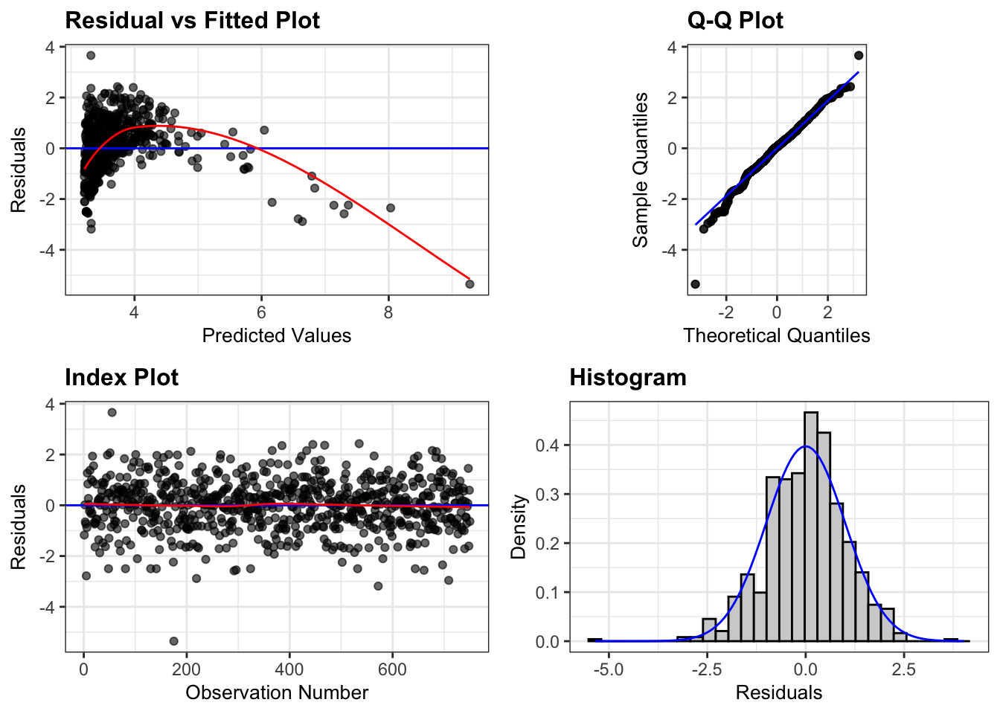
resid_xpanel(aprice_pieces, smoother=TRUE)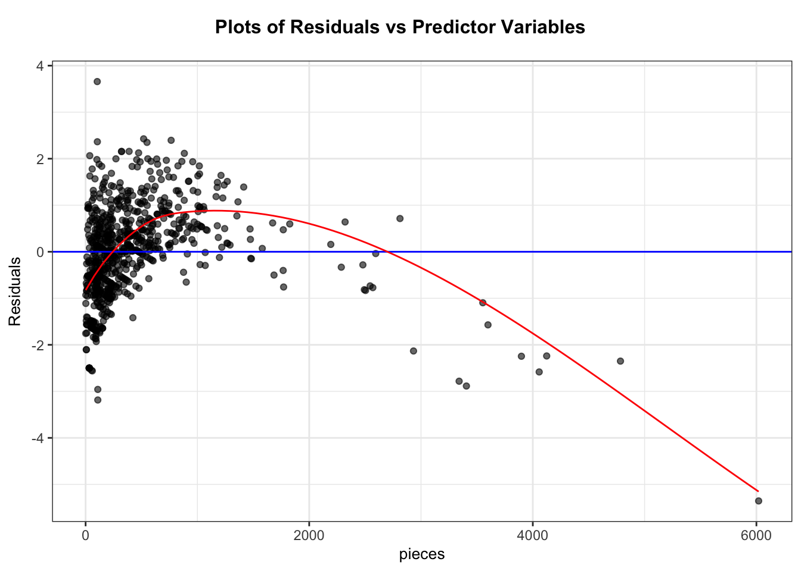
I started with the model \[\widehat{\text{price}_i} = \beta_0 + \beta_1 \times \text{pieces}_i + \epsilon_i\sim\mathcal{N}(0, \sigma)\] but after looking at the residual plot, it was clear that a log transform was needed. So I chose to start instead by applying a log transform. So we are now looking at the model \[log(\widehat{\text{price}}) = \beta_0 + \beta_1 \times \text{pieces} + \epsilon_i\sim\mathcal{N}(0, \sigma)\] I will be carrying this log transform through the rest of the models I make from here on. I chose ‘pieces’ first as it was clearly the most correlated with Amazon price based on our data exploration. So it seems like this is the best starting point for a one variable model. After log transform, most model assumptions seem good. However, we see some issues in the residual plot. We fix this down below. Still, this model seems to be a solid starting point. Both coefficients have low p-values reflecting that they seem to be meaningful. Let us move forward to improve this model.
Call:
lm(formula = log(amazon_price) ~ pieces + I(pieces^2), data = Legos)
Residuals:
Min 1Q Median 3Q Max
-1.91519 -0.35910 -0.03323 0.33814 2.56292
Coefficients:
Estimate Std. Error t value Pr(>|t|)
(Intercept) 2.933e+00 3.139e-02 93.44 <2e-16 ***
pieces 2.033e-03 7.544e-05 26.95 <2e-16 ***
I(pieces^2) -3.105e-07 2.019e-08 -15.37 <2e-16 ***
---
Signif. codes: 0 '***' 0.001 '**' 0.01 '*' 0.05 '.' 0.1 ' ' 1
Residual standard error: 0.5706 on 747 degrees of freedom
Multiple R-squared: 0.5851, Adjusted R-squared: 0.584
F-statistic: 526.8 on 2 and 747 DF, p-value: < 2.2e-16exp(aprice_pieces_sqrd$coefficients)(Intercept) pieces I(pieces^2)
18.7785578 1.0020354 0.9999997 resid_panel(aprice_pieces_sqrd, smoother=TRUE)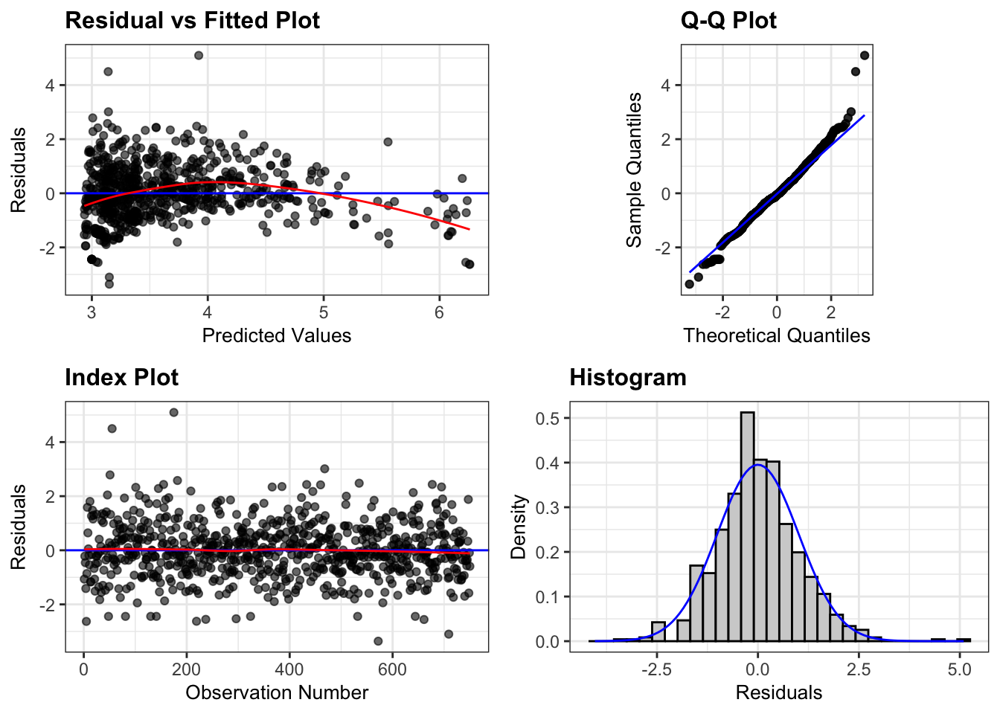
resid_xpanel(aprice_pieces_sqrd, smoother=TRUE)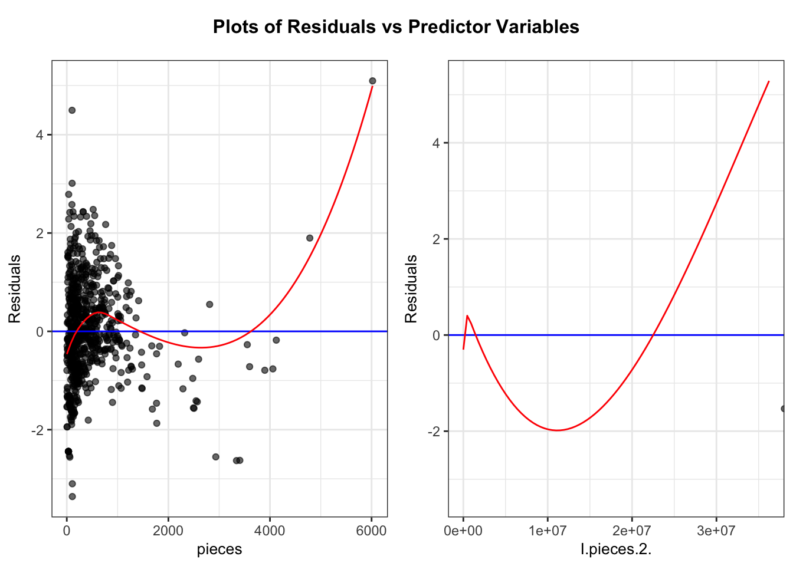
As mentioned above, we saw some issues in the residual plot in our previous model. Specifically, it seemed as though there was a quadratic relationship with the residuals and the number of pieces. So it seems we should add a quadratic term here, leading to the model \[log(\widehat{\text{price}_i}) = \beta_0 + \beta_1 \times \text{pieces}_i + \beta_2 \times \text{pieces}^2_i + \epsilon_i\sim\mathcal{N}(0, \sigma) \] Looking at the summary it seems like this quadratic term is doing something meaningful with a low p-value, suggesting a discernible quadratic relationship. Looking at residual plot vs pieces, it seems the issues present before have been rectified by the quadratic term. The plotted red line seems to be greatly skewed by outlier points. We also see a jump in \(\text{R}^2\) here which is a good sign. I will carry this quadratic term through the rest of the models in this project. Based on residual plots, all other model assumptions seem to hold, though we may see some slight funneling in the residual plot. But it does not seem to be much of a concern.
Call:
lm(formula = log(amazon_price) ~ pieces + +I(pieces^2) + unique_pieces,
data = Legos)
Residuals:
Min 1Q Median 3Q Max
-1.73984 -0.34002 -0.05167 0.32196 2.63624
Coefficients:
Estimate Std. Error t value Pr(>|t|)
(Intercept) 2.816e+00 3.356e-02 83.918 < 2e-16 ***
pieces 1.334e-03 1.141e-04 11.697 < 2e-16 ***
I(pieces^2) -2.076e-07 2.333e-08 -8.897 < 2e-16 ***
unique_pieces 2.740e-03 3.451e-04 7.940 7.44e-15 ***
---
Signif. codes: 0 '***' 0.001 '**' 0.01 '*' 0.05 '.' 0.1 ' ' 1
Residual standard error: 0.5483 on 746 degrees of freedom
Multiple R-squared: 0.6174, Adjusted R-squared: 0.6159
F-statistic: 401.3 on 3 and 746 DF, p-value: < 2.2e-16exp(aprice_pieces_upieces$coefficients) (Intercept) pieces I(pieces^2) unique_pieces
16.7084877 1.0013351 0.9999998 1.0027439 exp(confint(aprice_pieces_upieces, "unique_pieces", level=.95)) 2.5 % 97.5 %
unique_pieces 1.002065 1.003423resid_panel(aprice_pieces_upieces, smoother=TRUE)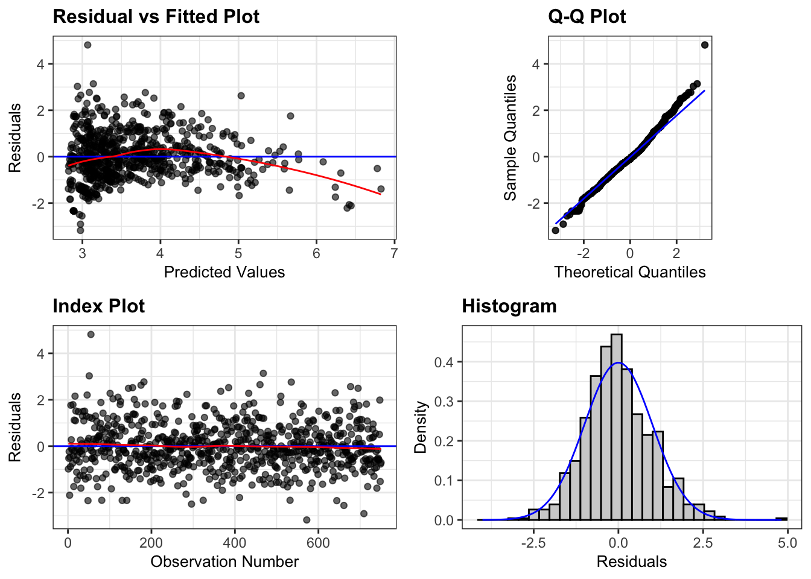
resid_xpanel(aprice_pieces_upieces, smoother=TRUE)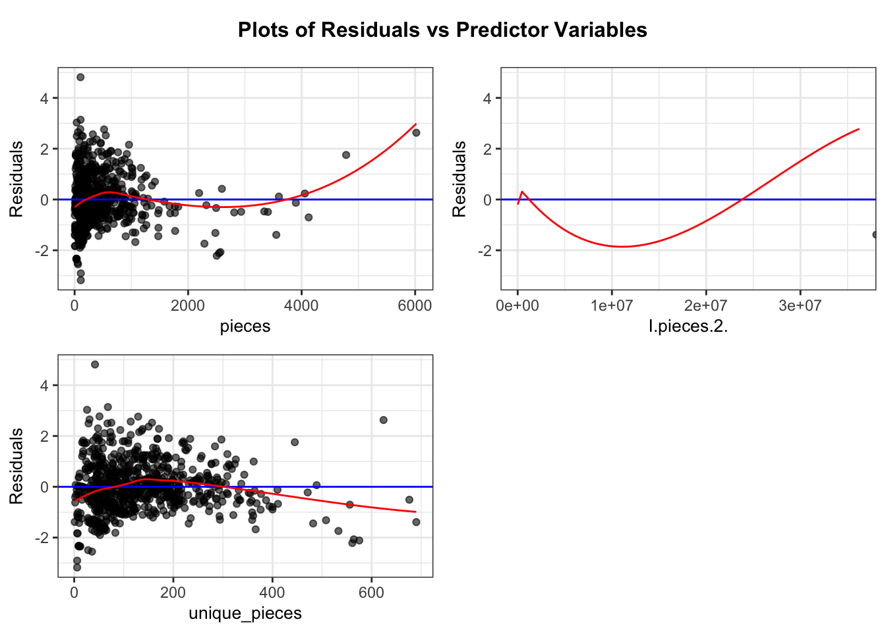
I now look to build the model \[log(\widehat{\text{price}_i}) = \beta_0 + \beta_1 \times \text{pieces}_i + \beta_2 \times \text{pieces}^2_i + \beta_3 \times \text{unique\_pieces}_i + \epsilon_i\sim\mathcal{N}(0, \sigma) \] Here we are attempting to add this unique pieces variable, with the idea that this does influence what many collectors will pay. We also certainly saw correlation between Amazon price and this variable in our data exploration. Residual plots do not suggest a polynomial relationship with this predictor. However, there does seem to be some possible funneling with the residual plot. It does not seem severe, but something to keep in mind. Residual vs price plotted line still seems to be skewed by outlier points. All other assumptions seem to be holding well based on plots. We do see low P-values on all coefficients suggesting that all of our terms are meaningful. We do see only a moderate jump in \(\text{R}^2\) suggesting maybe this additional complexity is not worth it. So unique_pieces may be a good predictor, but not be adding a lot to this model.
Call:
lm(formula = log(amazon_price) ~ pieces + I(pieces^2) + unique_pieces +
theme_group, data = Legos)
Residuals:
Min 1Q Median 3Q Max
-1.40644 -0.32307 -0.03799 0.29569 2.57549
Coefficients:
Estimate Std. Error t value
(Intercept) 2.869e+00 7.045e-02 40.723
pieces 1.429e-03 1.133e-04 12.609
I(pieces^2) -2.205e-07 2.289e-08 -9.635
unique_pieces 2.611e-03 3.430e-04 7.613
theme_groupCity & Real-Life Play 3.472e-03 7.260e-02 0.048
theme_groupClassic & Creative Building -3.402e-01 8.961e-02 -3.796
theme_groupFantasy & Adventure -2.243e-01 8.219e-02 -2.730
theme_groupMovies, Games & Pop Culture 9.848e-02 7.603e-02 1.295
theme_groupOther -2.063e-01 1.066e-01 -1.935
theme_groupSpecialty & Collectible Themes -3.958e-01 1.204e-01 -3.286
Pr(>|t|)
(Intercept) < 2e-16 ***
pieces < 2e-16 ***
I(pieces^2) < 2e-16 ***
unique_pieces 8.17e-14 ***
theme_groupCity & Real-Life Play 0.961873
theme_groupClassic & Creative Building 0.000159 ***
theme_groupFantasy & Adventure 0.006493 **
theme_groupMovies, Games & Pop Culture 0.195604
theme_groupOther 0.053326 .
theme_groupSpecialty & Collectible Themes 0.001062 **
---
Signif. codes: 0 '***' 0.001 '**' 0.01 '*' 0.05 '.' 0.1 ' ' 1
Residual standard error: 0.5277 on 740 degrees of freedom
Multiple R-squared: 0.6485, Adjusted R-squared: 0.6442
F-statistic: 151.7 on 9 and 740 DF, p-value: < 2.2e-16exp(aprice_pieces_upieces_theme$coefficients) (Intercept)
17.6169215
pieces
1.0014303
I(pieces^2)
0.9999998
unique_pieces
1.0026145
theme_groupCity & Real-Life Play
1.0034777
theme_groupClassic & Creative Building
0.7116472
theme_groupFantasy & Adventure
0.7990472
theme_groupMovies, Games & Pop Culture
1.1034948
theme_groupOther
0.8135555
theme_groupSpecialty & Collectible Themes
0.6731551 exp(confint(aprice_pieces_upieces_theme, level=.95)) 2.5 % 97.5 %
(Intercept) 15.3414357 20.2299139
pieces 1.0012074 1.0016531
I(pieces^2) 0.9999997 0.9999998
unique_pieces 1.0019397 1.0032899
theme_groupCity & Real-Life Play 0.8701840 1.1571892
theme_groupClassic & Creative Building 0.5968527 0.8485205
theme_groupFantasy & Adventure 0.6799858 0.9389555
theme_groupMovies, Games & Pop Culture 0.9504940 1.2811240
theme_groupOther 0.6599130 1.0029694
theme_groupSpecialty & Collectible Themes 0.5314228 0.8526880resid_panel(aprice_pieces_upieces_theme, smoother=TRUE)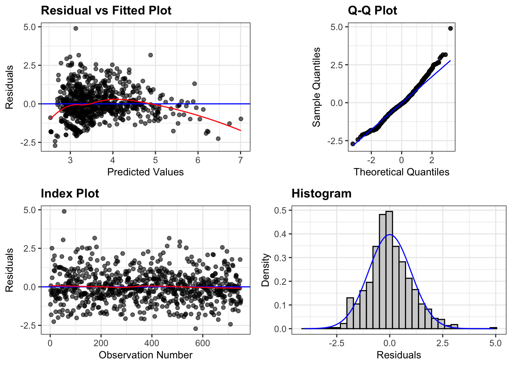
resid_xpanel(aprice_pieces_upieces_theme, smoother=TRUE)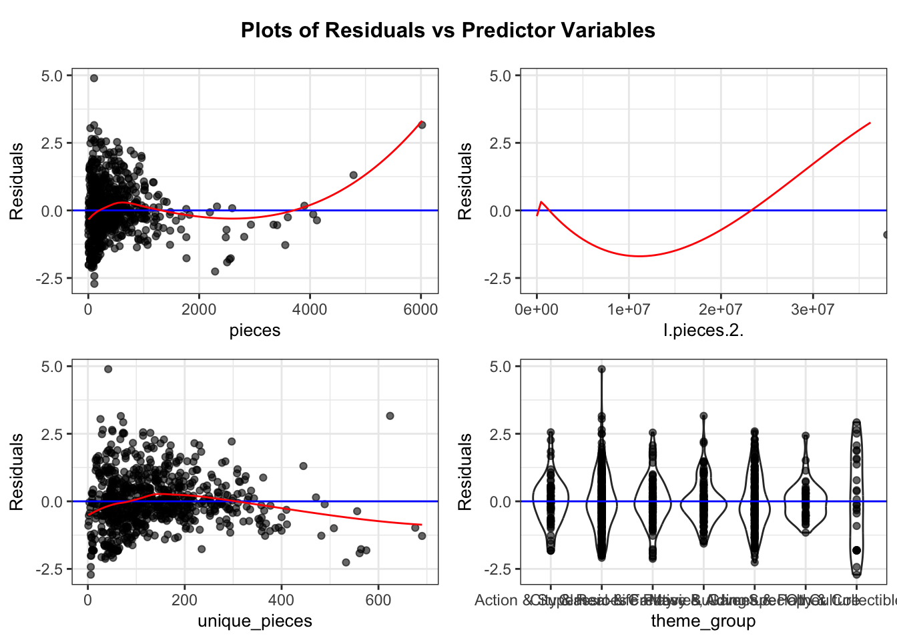
Finally, I look to build the model
\(log(\widehat{\text{price}_i}) = \beta_0 + \beta_1 \times\text{pieces}_i + \beta_2 \times \text{pieces}^2_i + \beta_3 \times\text{unique\_pieces}_i + \beta_4 \times \text{City and Real-Life Play}_i + \beta_5 \times \text{Classic and Creative}_i + \beta_6 \times \text{Fantasy and Adventure}_i + \beta_7 \times \text{Movies, Games, and Pop Culture}_i + \beta_8 \times \text{Speciality and Collectible Themes}_i + \epsilon_i\sim\mathcal{N}(0, \sigma)\)
This model is built with the idea in mind that many collectors/sellers care about the theme of sets. Additionally, we did see apparent variation between groups, at least for some, in our data exploration. No interaction term was considered here, as it does not seem viable (or worth the complexity) based on data exploration. Model assumptions all seem good based on plots. Any possible issues have been touched on above. Same slight funneling, but not a concern. Variance seems pretty steady across all theme groups. We see a small jump in \(\text{R}^2\) here again, suggesting this extra complexity may not be worth it. P-values suggest evidence that some theme groups, but not all, seem to have a statistically discernible impact on Amazon price.
Let us move forward to anova between the 3 models we built after our first, as clearly this model needed the quadratic term.
anova(aprice_pieces_sqrd, aprice_pieces_upieces)Analysis of Variance Table
Model 1: log(amazon_price) ~ pieces + I(pieces^2)
Model 2: log(amazon_price) ~ pieces + +I(pieces^2) + unique_pieces
Res.Df RSS Df Sum of Sq F Pr(>F)
1 747 243.21
2 746 224.26 1 18.951 63.04 7.444e-15 ***
---
Signif. codes: 0 '***' 0.001 '**' 0.01 '*' 0.05 '.' 0.1 ' ' 1anova(aprice_pieces_sqrd, aprice_pieces_upieces_theme)Analysis of Variance Table
Model 1: log(amazon_price) ~ pieces + I(pieces^2)
Model 2: log(amazon_price) ~ pieces + I(pieces^2) + unique_pieces + theme_group
Res.Df RSS Df Sum of Sq F Pr(>F)
1 747 243.21
2 740 206.06 7 37.149 19.058 < 2.2e-16 ***
---
Signif. codes: 0 '***' 0.001 '**' 0.01 '*' 0.05 '.' 0.1 ' ' 1anova(aprice_pieces_upieces, aprice_pieces_upieces_theme)Analysis of Variance Table
Model 1: log(amazon_price) ~ pieces + +I(pieces^2) + unique_pieces
Model 2: log(amazon_price) ~ pieces + I(pieces^2) + unique_pieces + theme_group
Res.Df RSS Df Sum of Sq F Pr(>F)
1 746 224.26
2 740 206.06 6 18.198 10.892 1.215e-11 ***
---
Signif. codes: 0 '***' 0.001 '**' 0.01 '*' 0.05 '.' 0.1 ' ' 1Results
The first model we built had very apparent issues, discussed as the quadratic relationship present in the residual plot. As such, we will focus more on the models built afterwards. Our first was a model predicting log price using pieces and pieces squared. Here we see a moderately high \(R^2\) value, with 0.58. So this tells us that approximately 58% of the variability is explained with this model. It is difficult to obtain a meaningful interpretation of the coefficients here as this is a quadratic model. The interpretation of our intercept term is nonsensical, being that it would apply to a Lego set with no pieces. However, we can use the coefficients on our pieces terms to obtain an estimation on when the price will peak based on the number of pieces. Seeing as our coefficients on our quadratic term is negative, we know this will happen. log(price), and therefore price will peak at \(-b/2a = -2.033e-03/(2*-3.105e-07) = 3273.752\). So essentially this tells us that after around 3200 pieces, the price of sets will start to decrease rather than increase. This may suggest that at a certain point, larger Lego sets become more of a hassle or nuisance to build, so people won’t want to pay as much. We see essentially zero p-values on all of our terms here. This suggests that pieces, and pieces squared, both have statistically discernible relationships with Amazon price.
We now move forward to our next model, which adds unique_pieces on to our previous model. Despite concerns with multicollinearity, we maintain ~0 p-values for all of our terms in this model. The exponentiated value of our unique_pieces term is 1.0027439. This tells us that our model predicts on average a 1.0027439 times increase in price for each additional unique piece in the set, as compared to adding an additional regular piece. In other words, a roughly .3 percent increase in price per unique_piece vs a regular piece. A 95% confidence interval tells us that we are 95% confident that this increase will be in the range from .2 to .35 percent increase per additional unique piece on average. As mentioned, we have essentially a zero p-value on this coefficient, though it is slightly higher than those of the pieces terms. This low p-value does suggest evidence that there is a statistically discernible relationship between unique_pieces and Amazon price. We also saw, when performing an F-test between this and the previous model, that we obtain an F-statistic of 63 with an essentially 0 p-values. This is a moderately high F-statistic, with the low p-value supporting that there is a statistically discernible difference. All this suggests that this model is an improvement on our previous one. Taking a look at our R^2, we see a jump to 0.6174. So around 61% of our variability is explained. This is not a large jump. However, it is still an improvement overall. All this seems to be a good sign for this model.
Our final model attempts to add the categorical theme as a predictor of our Amazon price. Right away, we see an \(R^2\) value of 0.6455, indicating that around 64.5% of variability is explained by this model. This is about the same sized jump as we made from our first model to our second. However, this time it comes at the cost of quite a bit more complexity. Additionally, looking at our F-tests, we get an F-stat of 21 for comparing this model and our first model, and 11 comparing this model and our second model. Both of these F-statistics have low p-values, suggesting that this is a statistically discernible difference. However, these F-values are not super high, and certainly lower than that of the second model compared to the first. In fact, we see that when comparing to just the first model, the second model made more of an improvement (based on the F test) than this third model does, despite the fact that this model still contains unique pieces. This is indication that this model may not be the best, especially given its complexity. There is still more to conclude from this model though. The coefficients for pieces, pieces^2, and unique pieces all still have essentially 0 p-values. So we still see strong evidence that these are meaningful terms. Two of the theme coefficients however have very large p-values, suggesting that these are not meaningful terms, and whether or not the set has this theme is not an important predictor compared to the number of pieces/unique pieces. However, three of our terms - Classic & Creative Building, Fantasy & Adventure, and Specialty & Collectible Themes all have p-values below .05. Thus we have strong evidence that a Lego set being of one of these themes does actually influence the price. The exponentiated coefficients on these are 0.7042700, 0.7995849, 0.6711235 respectively. So our model expects on average a 30%, 20%, and 33% average decrease in price respectively if the Lego set is any of these themes, holding the number of pieces and unique pieces constant. Taking a look at the confidence intervals for each of these, we see a lot of variation. For a specific example, we are 95% confident that the average decrease in estimated price (holding pieces and unique pieces constant) if a set is a specialty and collectible theme is between 48% and 15%. This is a very large range. The other three themes listed also show a similarly wide range, though this is the most extreme. All this seems to tell us that a few of these themes do matter, however we are not very certain of how much. There is a lot of variability/uncertainty here. Another thing to consider, is that it seems we’ve only obtained statistically discernible results for themes that decrease price, which may not be of much interest to a collector or a seller.
Conclusion
We built three main models attempting to predict Amazon price based on features of a Lego set. You as a collector, or seller, may be interested in knowing what sort of price you could put on a Lego set you have based on its features. The goal here was to build a model that does not use any information about the listed price of the Lego set to see if it was possible to ascertain resale value from just a Lego set itself. The three models we built were a quadratic model on the number of pieces, then a model adding the number of unique pieces to this, then a model adding what theme the Lego set was. The final model using theme group is not one I believe we should consider. For one, we did not see a large increase in R^2 considering the increased complexity of the model. Additionally, several of the coefficients proved to be not meaningful based on the p-values, and the ones that were had a lot of variability based on confidence intervals. Furthermore, these coefficients that were discernible do not seem to add good information for the context of reselling, especially considering yet again the complexity. There are also some obvious limitations to this model. The six theme groups used were developed by chat-gpt. I sent the list of all themes from the dataset to chat-gpt, and requested that chat-gpt break them in to six categories for me. This is possibly unreliable, and may not capture something important could easily be missed. Additionally, the size of these groups were uneven which can skew p-values and increase variability. So based on all this I’d like to turn my attention to the first two models. Between the first and the second, we again only see a small increase in R^2, from 58% to 61% variability explained. However this time we see a much larger F-statistic when comparing the two, suggesting a more significant difference. We are also adding less complexity with this change compared to the third model, thus getting the same level of increase in \(R^2\) for less cost. Both models see all coefficients as statistically discernible and meaningful. All these things seem to point to model 2 being the best choice. Clearly unique_pieces does seem to influence the price. However, a counterargument against model 2 could be made. When considering the practicality, we do see unique_pieces making a very small impact, even though it is statistically discernible. With 95% confidence that price will increase by .2% to .35% per unique_piece, this does seem to be a very small impact. Especially if we consider that most sets do not have a large amount of these kinds of pieces. With this being said, for the few sets that do have a large amount of unique_pieces, this will still prove to be a large difference. So seeing as this does not add a lot of additional complexity, and clearly suggests that unique_pieces has a statistically discernible relationship with Amazon price, it seems that this second model is the ideal one.
This model being the best one aligns with my expectations based on data exploration. I knew that pieces and unique_pieces would likely turn out to be the strongest and most meaningful predictors. I was slightly worried about multicollinearity, and equally as surprised when this did not seem to be much of an issue at all. I was hopeful about the theme group being a meaningful predictor, however I am not surprised that it did not seem to be as such. The variability between themes was not extremely pronounced in data exploration, though it was present. And the additional factor of the chat-gpt generated groups brings in an entire new dimension of unreliability.
Turning my attention now to the original goal. How well can we predict Amazon price based on Lego set features, without using original listed price. The model we created using only price to directly predicted Amazon price saw an R^2 value of .79, so approximately 80% of variability was explained. The model we decided on as our most meaningful, model 2, only explained around 61% of the variability. So we clearly were not able to get nearly as close with these factors alone as with the listed price. This is to be expected, as one can imagine that the listed price is usually what is being put as the Amazon price on average. Another thing to consider is as follows - for this specific question, in the context of reselling as a Lego collector, this dataset may not be very accurate. I am unclear where this data comes from, and the Amazon prices are most likely largely depictions of people directly selling a set based on its original price. Factors contributing to how much collectors will pay for a set may not be reflected in this dataset. A more curated and careful dataset would likely have to be generated to get a more accurate idea for this specific question. However, if you are stuck looking to resell or find the value on a Lego set without knowing the original listed price, the models we’ve built here can serve as a good guide for what factors are the most influential in determining the Amazon price.